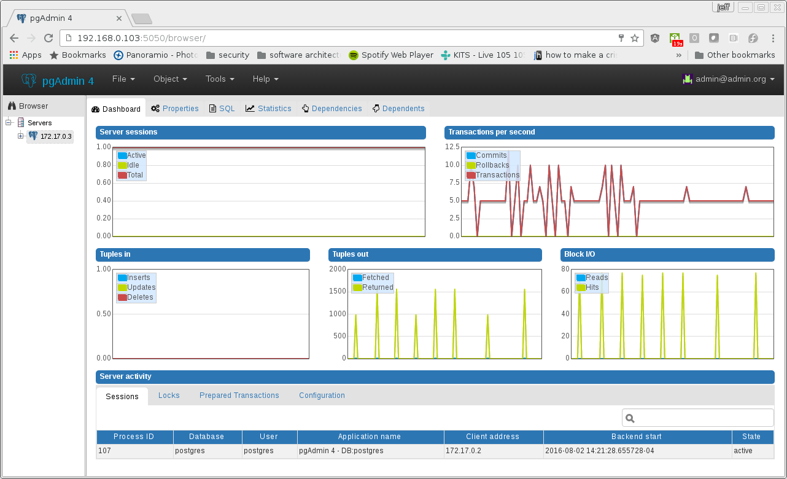

Table of Contents
- 1. Introduction
- 2. crunchy-postgres
- 3. crunchy-postgres-gis
- 4. crunchy-backup
- 5. crunchy-collect
- 6. crunchy-prometheus
- 7. crunchy-promgateway
- 8. crunchy-grafana
- 9. crunchy-pgbadger
- 10. crunchy-pgpool
- 11. crunchy-watch
- 12. crunchy-vacuum
- 13. crunchy-dba
- 14. crunchy-pgbouncer
- 15. crunchy-backrest-restore
- 16. crunchy-pgadmin4
- 17. crunchy-upgrade
- 18. Legal Notices
In this document, we will describe each of the containers found within the Crunchy Containers for PostgreSQL.
The containers and their relationships to the overall architecture are depicted below:

The crunchy-postgres container executes the Postgres database.
The container image is built using either the Crunchy Postgres release or the community version based upon a flag in the Makefile.
The crunchy-postgres RPMs are available to Crunchy customers only. The Crunchy release is meant for customers that require enterprise level support.
The PGDG community RPMs can be used as well by simply commenting out the Crunchy yum repo within the Dockerfiles and uncommenting the PGDG yum repo.
The setup.sql script is used to define startup SQL commands that are executed when the database is first created.
- PG_MODE - either master, slave or set, this value determines whether the database is set up as a master or slave instance, in the case of set, it means the container is started within a StatefulSet in a Kubernetes cluster.
- PG_MASTER_USER - the value to use for the user ID created as master. The master user has super user privileges.
- PG_MASTER_PASSWORD - the password for the PG_MASTER_USER database user
- PG_USER - the value to use for the user ID created as a normal user. This user is created as part of the setup.sql script upon database creation and allows users to predefine an application user.
- PG_PASSWORD - the password for the PG_USER database user that is created
- PG_DATABASE - a database that is created upon database initialization
- PG_ROOT_PASSWORD - the PostgreSQL user password set up upon database initialization
- PG_LOCALE - if set, the locale you want to create the database with, if not set, the default locale is used
- SYNC_SLAVE - if set, this value is used to specify the application_name of a slave that will be used for a synchronous replication
- CHECKSUMS - if set, this value is used to enable the --data-checksums option when initdb is executed at initialization, if not set, the default is to not enable data checksums
- XLOGDIR - if set, initdb will use the specified directory for WAL
- ARCHIVE_MODE - if set to on, will enable continuous WAL archiving by setting the value within the postgresql.conf file archive_mode setting, if not set, the default is off
- ARCHIVE_TIMEOUT - if set to a number (in seconds) , will specify the postgresql.conf archive_timeout setting, if not set, the default value of 60 is used.
- PGAUDIT_ANALYZE - if set, will cause the container to also start the pgaudit_analyze program in the background
- PGDATA_PATH_OVERRIDE - if set, will cause the container to use a /pgdata path name of your choosing rather than the hostname of the container which is the default…this is useful for a master in a deployment.
- XLOGDIR - if set to true, will cause initdb to include --xlogdir=$PGWAL, this will cause a symlink to be created from /pgdata/containername/pg_xlog to /pgwal/containername-wal
The following features are supported by the crunchy-postgres container:
- use of OpenShift secrets
- ability to restore from a database backup
- use of custom pg_hba.conf and postgresql.conf files
- ability to override postgresql.conf configuration parameters
- ability to override the default setup.sql script
- ability to set the database locale
- ability to specify a synchronous slave application_name
- ability to specify a recovery using PITR and WAL files, see pitr.adoc for a detailed design explanation of how PITR is implemented within the container suite
Adding locale support to the container is accomplished by running yum reinstall glibc_common within the container, this increases the size of the container image and can be removed if you do not require specific locale support.
You can specify the PG_LOCALE env var which is passed to the initdb command when the initial data files are created, for example:
"name": "PG_LOCALE", "value": "fr_BE.UTF-8"
By default, no locale is specified when the initdb command is executed.
This container is the same as the crunchy-postgres container except that it includes the following PostgreSQL extensions:
- postgis
- pl/r
You can test the pl/r extension by running the following commands for example:
create extension plr;
SELECT * FROM plr_environ();
SELECT load_r_typenames();
SELECT * FROM r_typenames();
SELECT plr_array_accum('{23,35}', 42);
CREATE OR REPLACE FUNCTION plr_array (text, text)
RETURNS text[]
AS '$libdir/plr','plr_array'
LANGUAGE 'c' WITH (isstrict);
select plr_array('hello','world');The crunchy-backup container executes a pg_basebackup against another database container. The backup is a full backup using the standard utility included with PostgreSQL, pg_basebackup.
Backups are stored in a mounted backup volume location, using the database host name plus -backups as a sub-directory, then followed by a unique backup directory based upon a date/timestamp. It is left to the user to perform database backup archives in this current version of the container. This backup location is referenced when performing a database restore.
The container is meant to be using a NFS or similar network file system to persist database backups.
- BACKUP_LABEL - when set, will set the label of the backup, if not set the default label used is crunchy-backup
- BACKUP_HOST - required, this is the database we will be doing the backup for
- BACKUP_USER - required, this is the database user we will be doing the backup with
- BACKUP_PASS - required, this is the database password we will be doing the backup with
- BACKUP_PORT - required, this is the database port we will be doing the backup with
PostgreSQL metrics are collected by the crunchy-collect container. This container collects 32 different PostgreSQL metrics from crunchy-postgres. To start collection of metrics on a PostgreSQL database, you add the crunchy-collect container into the pod that holds the crunchy-postgres container.
A full description with examples of the metrics collection containers is available here.
Metrics are stored in the crunchy-prometheus container, which is the container that runs the Prometheus time series database. Metrics are pushed from crunchy-collect to the Prometheus promgateway found in the crunchy-promgateway container. Metrics dashboards are created using the Grafana web application which is found in the crunchy-grafana container.
The container crunchy-collect collects PostgreSQL metrics from the crunchy-postgres database container and pushes them to a Prometheus time series data store, which is located in this crunchy-prometheus container. Prometheus is a flexible, highly dimensional time series data model that stores data efficiently, where time series are defined through a metric name and set of key-value pairs.
A full description with examples of the metrics collection containers is available here.
The following port is exposed by the crunchy-prometheus container:
- crunchy-prometheus:9090 - the Prometheus web user interface
crunchy-promgateway is the Prometheus gateway into which the metrics will be pushed from crunchy-prometheus. The types of collected metrics as well as their status are viewable from the REST API on port 9091.
A full description with examples of the metrics collection containers is available here.
The following port is exposed by the crunchy-promgateway container:
- crunchy-promgateway:9091 - the Prometheus promgateway REST API
Visual dashboards are created from the collected and stored data that crunchy-collect and crunchy-prometheus provides with the crunchy-grafana container, which hosts a web-based graphing dashboard called Grafana. Grafana is an open-source platform which can then apply the defined metrics and visualize information through various tools. It is extremely flexible with a powerful query and transformation language, producing beautiful and easily understandable graphics to analyze and monitor your data.
A full description with examples of the metrics collection containers is available here.
The following port is exposed by the crunchy-grafana container:
- crunchy-grafana:3000 - the Grafana web user interface
The crunchy-pgbadger container executes the pgbadger utility. A small http server is running on the container, when a request is made to:
http://<<ip address>>:10000/api/badgergenerate
- BADGER_TARGET - only used in standalone mode to specify the name of the container, also used to find the location of the database log files in /pgdata/$BADGER_TARGET/pg_log/*.log
The crunchy-pgpool container executes the pgpool utility. Pgpool can be used to provide a smart PostgreSQL-aware proxy to a PostgreSQL cluster, both master and slave, so that applications can only have to work with a single database connection.
Postgres slaves are read-only whereas a master is both read and write capable.
- PG_USERNAME - user to connect to PostgreSQL
- PG_PASSWORD - user password to connect to PostgreSQL
- PG_MASTER_SERVICE_NAME - database host to connect to for the master node
- PG_SLAVE_SERVICE_NAME - database host to connect to for the slave node
We create a container, crunchy-watch, that runs as a pod unto itself typically. The watch container essentially does a health check on a master database container and performs a failover sequence if the master is not reached.
The watch container has access to a service account that is used inside the container to issue commands to OpenShift.
You set up the SA using this:
oc create -f watch-sa.json
You then set up permissions for the SA to edit the OpenShift project, this example allows all service accounts to edit resources in the default project:
oc policy add-role-to-group edit system:serviceaccounts -n default
In Kube 1.5, if a policy file is being used for securing down the Kube cluster, you could possibly need to add a policy to allow the pg-watcher service account access to the Kube API as mentioned here: https://kubernetes.io/docs/admin/authorization/abac/#a-quick-note-on-service-accounts
In Kube 1.6, an equivalent RBAC policy is also possibly required depending on your authorization/authentication configuration. See this link for details on the new RBAC policy mechanism: https://kubernetes.io/docs/admin/authorization/rbac/
For example, you can grant cluster-admin permissions on the pg-watcher service account, in the my-namespace namespace as follows:
kubectl create clusterrolebinding pgwatcher-view-binding --clusterrole=cluster-admin --serviceaccount=my-namespace:pg-watcher
A less wide open policy would be applied like this on Kube 1.6 rbac:
kubectl create rolebinding my-sa-binding --clusterrole=admin --serviceaccount=default:pg-watcher --namespace=default
Note
this kubectl command is only available in Kube 1.6, for prior Kube release such as 1.5 and the alpha RBAC, you will need to specify the role binding in a JSON/YAML file instead of using this command syntax above.
You then reference the SA within the POD spec.
The oc/docker/kubectl commands are included into the container from the host when the container image is built. These commands are used by the watch logic to interact with the replica containers.
- SLEEP_TIME - the time to sleep in seconds between checking on the master
- WAIT_TIME - the time to sleep in seconds between triggering the failover and updating its label (default is 40 secs)
- PG_MASTER_SERVICE - the master service name
- PG_SLAVE_SERVICE - the slave service name
- PG_MASTER_PORT - database port to use when checking the database
- PG_MASTER_USER - database user account to use when checking the database using pg_isready utility
- PG_DATABASE - database to use when checking the database using pg_isready
- SLAVE_TO_TRIGGER_LABEL - this is the pod name of a replica that you want to choose as the new master in a failover, this will override the normal replica selection
The watch container will watch the master, if the master dies, then the watcher will:
- create the trigger file on the slave that will become the new master
- change the labels on the slave to be those of the master
- will start watching the new master in case that falls over next
- will look for slaves that have the metadata label value of slavetype=trigger to prefer the failover to, if found it will use the first slave with that label, if not found, it will use the first slave it finds
Example of looking for the failover slave:
oc get pod -l name=pg-slave-rc-dc NAME READY STATUS RESTARTS AGE pg-slave-rc-dc 1/1 Running 2 16m pg-slave-rc-dc-1-96qs8 1/1 Running 1 16m oc get pod -l slavetype=trigger NAME READY STATUS RESTARTS AGE pg-slave-rc-dc 1/1 Running 2 16m
The crunchy-vacuum container allows you to perform a SQL VACUUM job against a PostgreSQL database container. You specify a database to vacuum using various environment variables which are listed below. It is possible to run different vacuum operations either manually or automatically through scheduling.
The crunchy-vacuum image is executed, passed in the Postgres connection parameters to the single-master PostgreSQL container. The type of vacuum performed is dictated by the environment variables passed into the job.
The complete set of environment variables read by the crunchy-vacuum job include:
- VAC_FULL - when set to true adds the FULL parameter to the VACUUM command
- VAC_TABLE - when set, allows you to specify a single table to vacuum, when not specified, the entire database tables are vacuumed
- JOB_HOST - required variable is the postgres host we connect to
- PG_USER - required variable is the postgres user we connect with
- PG_DATABASE - required variable is the postgres database we connect to
- PG_PASSWORD - required variable is the postgres user password we connect with
- PG_PORT - allows you to override the default value of 5432
- VAC_ANALYZE - when set to true adds the ANALYZE parameter to the VACUUM command
- VAC_VERBOSE - when set to true adds the VERBOSE parameter to the VACUUM command
- VAC_FREEZE - when set to true adds the FREEZE parameter to the VACUUM command
The crunchy-dba container implements a cron scheduler. The purpose of the crunchy-dba container is to offer a way to perform simple DBA tasks that occur on some form of schedule such as backup jobs or running a vacuum on a single Postgres database container.
You can either run the crunchy-dba container as a single pod or include the container within a database pod.
The crunchy-dba container makes use of a Service Account to perform the startup of scheduled jobs. The Kube Job type is used to execute the scheduled jobs with a Restart policy of Never.
The following environment variables control the actions of crunchy-dba:
- OSE_PROJECT - required, the OSE project name to log into
- JOB_HOST - required, the PostgreSQL container name the action will be taken against
- VAC_SCHEDULE - if set, this will start a vacuum job container. The setting value must be a valid cron expression as described below.
- BACKUP_SCHEDULE - if set, this will start a backup job container. The setting value must be a valid cron expression as described below.
For a vacuum job, you are required to supply the following environment variables:
- JOB_HOST
- PG_USER
- PG_PASSWORD
- PG_DATABASE - defaults to postgres when not specified
- PG_PORT - defaults to 5432 when not specified
- VAC_ANALYZE(optional) - defaults to true when not specified
- VAC_FULL(optional) - defaults to true when not specified
- VAC_VERBOSE(optional) - defaults to true when not specified
- VAC_FREEZE(optional) - defaults to false when not specified
- VAC_TABLE(optional) - defaults to all tables when not specified, or you can set this value to indicate a single table to vacuum
For a backup job, you are required to supply the following environment variables:
- JOB_HOST
- PG_USER - database user used to perform the backup
- PG_PASSWORD - database user password used to perform the backup
- PG_PORT - port value used when connecting for a backup to the database
- BACKUP_PV_CAPACITY - a value like 1Gi is used to define the PV storage capacity
- BACKUP_PV_PATH - the NFS path used to build the PV
- BACKUP_PV_HOST - the NFS host used to build the PV
- BACKUP_PVC_STORAGE - a value like 75M means to allow 75 megabytes for the PVC used in performing the backup
A cron expression represents a set of times, using 6 space-separated fields.
Table 1. Table Fields
Field name | Mandatory? | Allowed values | Allowed special characters |
Seconds | Yes | 0-59 | * / , - |
Minutes | Yes | 0-59 | * / , - |
Hours | Yes | 0-23 | * / , - |
Day of month | Yes | 1-31 | * / , - ? |
Month | Yes | 1-12 or JAN-DEC | * / , - |
Day of week | Yes | 0-6 or SUN-SAT | * / , - ? |
Note: Month and Day-of-week field values are case insensitive. "SUN", "Sun", and "sun" are equally accepted.
The asterisk indicates that the cron expression will match for all values of the field; e.g., using an asterisk in the 5th field (month) would indicate every month.
Slashes are used to describe increments of ranges. For example 3-59/15 in the 1st field (minutes) would indicate the 3rd minute of the hour and every 15 minutes thereafter. The form "*\/…" is equivalent to the form "first-last/…", that is, an increment over the largest possible range of the field. The form "N/…" is accepted as meaning "N-MAX/…", that is, starting at N, use the increment until the end of that specific range. It does not wrap around.
Commas are used to separate items of a list. For example, using "MON,WED,FRI" in the 5th field (day of week) would mean Mondays, Wednesdays and Fridays.
Hyphens are used to define ranges. For example, 9-17 would indicate every hour between 9am and 5pm inclusive.
You may use one of several pre-defined schedules in place of a cron expression.
Table 2. Table Predefined Schedules
Entry | Description | Equivalent To |
@yearly (or @annually) | Run once a year, midnight, Jan. 1st | 0 0 0 1 1 * |
@monthly | Run once a month, midnight, first of month | 0 0 0 1 * * |
@weekly | Run once a week, midnight on Sunday | 0 0 0 * * 0 |
@daily (or @midnight) | Run once a day, midnight | 0 0 0 * * * |
@hourly | Run once an hour, beginning of hour | 0 0 * * * * |
You may also schedule a job to execute at fixed intervals. This is supported by formatting the cron spec like this:
@every <duration>
where "duration" is a string accepted by time.ParseDuration (http://golang.org/pkg/time/#ParseDuration).
For example, "@every 1h30m10s" would indicate a schedule that activates every 1 hour, 30 minutes, 10 seconds.
Note: The interval does not take the job runtime into account. For example, if a job takes 3 minutes to run, and it is scheduled to run every 5 minutes, it will have only 2 minutes of idle time between each run.
All interpretation and scheduling is done in the machines local time zone (as provided by the Go time package (http://www.golang.org/pkg/time). Be aware that jobs scheduled during daylight-savings leap-ahead transitions will not be run!
The crunchy-ppgbouncer container executes the Postgres pgbouncer utility and a failover watch script.
- FAILOVER - when set, the container will look at the configured master database and if it can’t reach it, will perform a failover to a configured slave database
- OSE_PROJECT - when set, indicates you are running under OSE
- PG_MASTER_USER - the value to use for the user ID created as master. The master user has super user privileges.
- SLEEP_TIME - time in seconds to sleep when polling the master
- PG_DATABASE - the database to use when checking the readiness of the master
- PG_MASTER_PORT - the PostgreSQL port to use when checking the master
- PG_MASTER_SERVICE - the name of the master database container
- PG_SLAVE_SERVICE - the name of the slave database container, this is used to know which container to trigger the failover on
The following features are supported by the crunchy-postgres container:
- mount pgbouncer user.txt and pgbouncer.ini config files via /pgconf volume
- ability to cause a failover on a configured slave container
- ability to rewrite the pgbouncer.ini config file and reload pgbouncer after a failover
The crunchy-backrest-restore container executes the pgbackrest utility, allowing FULL and DELTA restore capability. See the pgbackrest guide for more details. https://github.com/pgbackrest/pgbackrest
- STANZA - required - must be set to the desired stanza for restore
- DELTA - when set, will add the --delta option to the restore. The delta option allows pgBackRest to automatically determine which files in the database cluster directory can be preserved and which ones need to be restored from the backup — it also removes files not present in the backup manifest so it will dispose of divergent changes.
The following features are supported by the crunchy-backrest-restore container:
- mount pgbackrest.conf config file via /pgconf volume
- mount the /backrestrepo for access to pgbackrest archives
The crunchy-ppgadmin4 container executes the pgadmin4 web application.
The pgadmin4 project is found at the following location: https://www.pgadmin.org/
pgadmin4 provides a web user interface to PostgreSQL databases. A sample screenshot is below:

The following features are supported by the crunchy-pgadmin4 container:
- mount config_local.py and pgadmin4.db to /data volume inside the container to support customization and store the pgadmin4 database file
- expose port 5050 which is the web server port
- a sample pgadmin4 database is provided with an initial administrator user admin@admin.org and password of password
The crunchy-upgrade container contains both the 9.5 and 9.6 Postgres packages in order to perform a pg_upgrade from a 9.5 to a 9.6 version.
- OLD_DATABASE_NAME - required, refers to the database (pod) name that we want to convert
- NEW_DATABASE_NAME - required, refers to the database (pod) name that we give to the upgraded database
- OLD_VERSION - required, the Postgres version of the old database
- NEW_VERSION - required, the Postgres version of the new database
- PG_LOCALE - if set, the locale you want to create the database with, if not set, the default locale is used
- CHECKSUMS - if set, this value is used to enable the --data-checksums option when initdb is executed at initialization, if not set, the default is to not enable data checksums
- XLOGDIR - if set, initdb will use the specified directory for WAL
The following features are supported by the crunchy-upgrade container:
- supports only a pg_upgrade of the Postgres database
- doesn’t alter the old database files
- creates the new database directory
Copyright © 2017 Crunchy Data Solutions, Inc.
CRUNCHY DATA SOLUTIONS, INC. PROVIDES THIS GUIDE "AS IS" WITHOUT WARRANTY OF ANY KIND, EITHER EXPRESS OR IMPLIED, INCLUDING, BUT NOT LIMITED TO, THE IMPLIED WARRANTIES OF NON INFRINGEMENT, MERCHANTABILITY OR FITNESS FOR A PARTICULAR PURPOSE.
Crunchy, Crunchy Data Solutions, Inc. and the Crunchy Hippo Logo are trademarks of Crunchy Data Solutions, Inc.